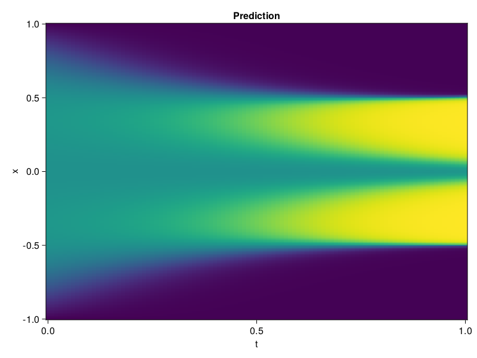

Allen-Cahn Equation with Sequential Training
In this tutorial we are going to solve the Allen-Cahn equation with periodic boundary condition from $t=0$ to $t=1$. The traning process is split into four stages, namely $t\in [0,0.25]$, $t\in [0.0,0.5]$, $t\in [0.0,0.75]$ and $t\in [0.0, 1.0]$.
using ModelingToolkit, IntervalSets
using Sophon
using Optimization, OptimizationOptimJL
@parameters t, x
@variables u(..)
Dₓ = Differential(x)
Dₓ² = Differential(x)^2
Dₜ = Differential(t)
eq = Dₜ(u(x, t)) - 0.0001 * Dₓ²(u(x, t)) + 5 * u(x,t) * (abs2(u(x,t)) - 1.0) ~ 0.0
domain = [x ∈ -1.0..1.0, t ∈ 0.0..0.25]
bcs = [u(x,0) ~ x^2 * cospi(x),
u(-1,t) ~ u(1,t)]
@named allen = PDESystem(eq, bcs, domain, [x, t], [u(x, t)])\[ \begin{align} - 0.0001 \frac{\mathrm{d}}{\mathrm{d}x} \frac{\mathrm{d}}{\mathrm{d}x} u\left( x, t \right) + 5 \left( -1 + \left|u\left( x, t \right)\right|^{2} \right) u\left( x, t \right) + \frac{\mathrm{d}}{\mathrm{d}t} u\left( x, t \right) =& 0 \end{align} \]
Then we define the neural net, the sampler, and the training strategy.
chain = FullyConnected(2, 1, tanh; hidden_dims=16, num_layers=4)
pinn = PINN(chain)
sampler = QuasiRandomSampler(500, (300, 100))
strategy = NonAdaptiveTraining(1, (50, 1))
prob = Sophon.discretize(allen, pinn, sampler, strategy)OptimizationProblem. In-place: true
u0: ComponentVector{Float64}(layer_1 = (weight = [0.7998244166374207 1.0865821838378906; 1.0848876237869263 1.7600700855255127; … ; 0.27884262800216675 0.020871568471193314; 0.13221506774425507 1.3755242824554443], bias = [0.0; 0.0; … ; 0.0; 0.0;;]), layer_2 = (weight = [0.24419136345386505 -0.562248706817627 … 0.6728237271308899 -0.3048478960990906; 0.23184621334075928 -0.2445535659790039 … -0.45904234051704407 0.0939377024769783; … ; -0.09644553065299988 -0.3980288505554199 … 0.60887211561203 -0.33411267399787903; 0.23816423118114471 0.3399677574634552 … 0.13232462108135223 -0.6003159880638123], bias = [0.0; 0.0; … ; 0.0; 0.0;;]), layer_3 = (weight = [-0.06444313377141953 -0.2855357229709625 … -0.6174280047416687 -0.43925997614860535; 0.6410710215568542 -0.6869300603866577 … -0.0932273417711258 -0.07569678872823715; … ; -0.14186924695968628 -0.3889320194721222 … 0.4379690885543823 0.036976851522922516; -0.12385116517543793 0.07143674790859222 … -0.14733631908893585 0.6579182147979736], bias = [0.0; 0.0; … ; 0.0; 0.0;;]), layer_4 = (weight = [-0.6512070298194885 -0.26790544390678406 … -0.5296310782432556 -0.2526783347129822; -0.328976571559906 0.4800143241882324 … 0.5447647571563721 0.5160126686096191; … ; 0.5809294581413269 -0.10589201003313065 … 0.2703905701637268 0.594214916229248; -0.028407471254467964 -0.21969430148601532 … 0.1913907527923584 -0.5100303292274475], bias = [0.0; 0.0; … ; 0.0; 0.0;;]), layer_5 = (weight = [0.6538586020469666 -0.3577902019023895 … 0.07858617603778839 -0.6012308597564697], bias = [0.0;;]))We solve the equation sequentially in time.
function train(allen, prob, sampler, strategy)
bfgs = BFGS()
res = Optimization.solve(prob, bfgs; maxiters=2000)
for tmax in [0.5, 0.75, 1.0]
allen.domain[2] = t ∈ 0.0..tmax
data = Sophon.sample(allen, sampler)
prob = remake(prob; u0=res.u, p=data)
res = Optimization.solve(prob, bfgs; maxiters=2000)
end
return res
end
res = train(allen, prob, sampler, strategy)u: ComponentVector{Float64}(layer_1 = (weight = [1.9595281831922582 0.8110465267182496; 0.852066177551201 0.9609701423689729; … ; 1.4292411677843835 0.19932846186720826; -0.18266904559935015 1.3057739825145238], bias = [-1.718901691092769; 0.7168641763372798; … ; -0.39094706063583784; -0.03932229586480697;;]), layer_2 = (weight = [0.27819490124394897 -1.0413296502723093 … 0.386436200761136 -0.9267605238861729; 0.034738729396390736 0.06719986633039454 … -0.4446277596270297 0.25391772423963604; … ; 0.6937759824519938 -0.91370385945688 … 0.9239945055876548 -0.32602675297296163; 0.07468790266143055 0.33281765933624397 … 0.010010101700375957 -0.8931542266163832], bias = [0.05967008516248783; -0.06102873698633385; … ; 0.46349702564661444; -0.4190403031790009;;]), layer_3 = (weight = [-0.12014379798210904 -0.8546929658135716 … -0.47111049827583784 -0.9310877052154872; 0.808246352224404 -0.7687555113604374 … 0.10968498208585757 -0.22631566267057762; … ; 0.3813122629534111 -0.027307881750868294 … 0.5185453070010408 0.5997363052947254; 0.3164199232344789 -0.08505296686752882 … -0.3645341948277187 0.6100241793035385], bias = [-0.5351136257865375; 0.17199589753012923; … ; 0.5199868067947188; 0.1318110535911178;;]), layer_4 = (weight = [-0.9377288529157543 0.06902830422865017 … -0.3969264690788394 -0.8176581222927217; -0.4479729097587155 0.7703000488724228 … 0.25152864416623405 0.501254597736927; … ; 0.034982182238864595 -0.19536443046887 … 0.20542212814998995 0.5318926192439607; -0.49849104559361684 0.037678748128483576 … 0.22414128241695006 -0.4605756823596124], bias = [-0.5024724885508401; -0.17142375325777964; … ; 0.16330278856777122; 0.5600198463678163;;]), layer_5 = (weight = [0.4313583975837707 -0.06005071936968771 … -0.12992190884494595 -0.5047870320575599], bias = [-0.30903237862240907;;]))Let's plot the result.
using CairoMakie
phi = pinn.phi
xs, ts = [infimum(d.domain):0.01:supremum(d.domain) for d in allen.domain]
axis = (xlabel="t", ylabel="x", title="Prediction")
u_pred = [sum(pinn.phi([x, t], res.u)) for x in xs, t in ts]
fig, ax, hm = heatmap(ts, xs, u_pred', axis=axis)